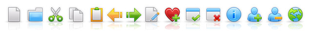
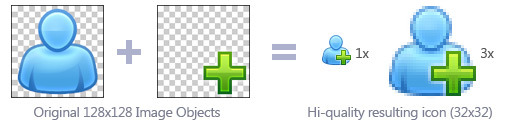
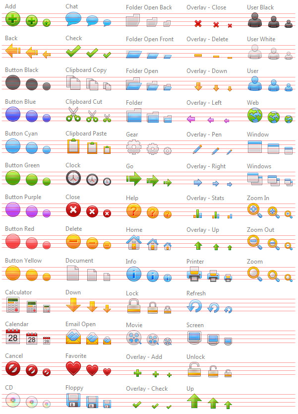
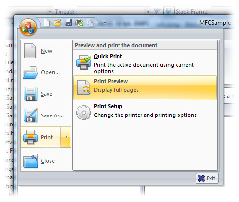

Rinoa Icons for Toolbars
Object Pack for IconWorkshop
Copyright ©2009 Creative 9 Design Studio - Axialis Exclusive Distribution
 Description
Description
Rinoa Object Pack is composed of 183 objects (read more about objects) which permit creating icons for toolbars in 32x32, 24x24 and 16x16 formats. Using drag & drop, you can create icons by associating basic objects and action overlays. The style is clean and professional which make them suitable for commercial applications.
Below is an example of an icon set which can be done in a few minutes using this pack:

61 objects are provided in 3 different sizes. The pack permits creating toolbars icons in 32x32, 24x24 and 16x16 as required in modern applications compatible with Windows Vista multi-DPI capabilities. The original drawings of the objects are larger and aligned on a 4-pixel boundary to produce perfect looking icons. When you add an object to an icon, the image is scaled down as follows:
|
 |
 License Agreement
License Agreement
All the object remains properties of Creative 9 Design. You can use them royalty-free to create icons and use them in personal and commercial projects as long as you respect the terms of the User License Agreement.
 The pack is based on an icon set by Creative 9 Design Studio. Located in China, this company offers graphic design services for icons, skins, logos, websites. If you need additional custom icons in the same style, we recommend that you contact the team for a quote.
The pack is based on an icon set by Creative 9 Design Studio. Located in China, this company offers graphic design services for icons, skins, logos, websites. If you need additional custom icons in the same style, we recommend that you contact the team for a quote.
 Contents of the Pack
Contents of the Pack
The pack contains 183 image objects (61 icons in 3 sizes). Objects are optimized for 32x32, 24x24 and 16x16 icon creation but they can be used for other sizes. Large objects are provided in PNG formats. A set of ready-to-use icons in ICO format is also provided at smaller size (folder "ICO").
Here is the list of objects included in the pack (red lines have been added for copyright reasons):

 How to implement icons in toolbars?
How to implement icons in toolbars?
If you want to add icons in application toolbars, we don't recommend to make individual ICO files. It is possible but all the GUI SDK tools use filmstrips instead. A filmstrip is a large image containing all the icons placed side-by-side. Accepted file format is BMP (recent SDKs accept PNG also). Here is an example of filmstrip used to populate a toolbar:

Once the filmstrip is programatically loaded in the application GUI, the toolbars and menus are populated with the icons. See below the professional result with RGB/A 32x32 icons in an MFC application with ribbon (Visual C++ 2008 SP1):

 How to create a filmstrip for a toolbar?
How to create a filmstrip for a toolbar?
We'll create a 32x32 RGB/A (32 BPP) filmstrip. Latest versions of the GUI SDKs such as MFC (version included in Visual C++ 2008 SP1 of Feature Pack) support toolbar icons in 32 BPP RGB with alpha channel. The alpha channel permits to create icons with smooth borders, shadows and transparency. This is the state-of-the art in professional icon creation.
To create the icons, we'll use the objects included in folder 32x32 of the pack "Rinoa". The procedure is strictly similar with 24x24 or 16x16 icons frequently used in toolbars too.
IMPORTANT: You need Axialis IconWorkshop 6.30 or superior to follow this tutorial.
1. Choose File > New > Filmstrip for Toolbar or press Ctrl+T. A Dialog box opens, choose "RGB/A with Alpha Channel" and "32x32" in size of images. Specify also the number of images you wish to add in the filmstrip, 8 for example.
2. The new document is created. At the top of the window is displayed a list containing 8 blank entries. You can select the images to edit in this list. Using this feature you'll be able to edit each image separately (even if they share the same bitmap). IconWorkshop separes them virtually to help you working on the filmstrip.
3. Select the first image in the list "Image 0". Note that image numbers start at 0 to match the way they're handled in source codes. Make sure the Librarian is displayed and the object pack folder is selected. Select subfolder "32x32". This is where the image objects for 32x32 toolbars are located.
4. First let's create our first icon: A document icon with a "plus" overlay. In folder 32x32, select the object "Document.png" and drag & drop it in the editor window. The object is added. Redo the same operation with "Overlay - Add.png". The first icon is done!
5. Now this is a child's play: redo the same for the other icons using the various objects available in the list.
6. Note that you can change the order of the images in the list using drag & drop, copy images using Ctrl key or clipboard, add and remove images.
7. Once the toolbar filmstrip is finished, just save it by selecting the appropriate image format (BMP and PNG support RGB/A).
Enjoy :)